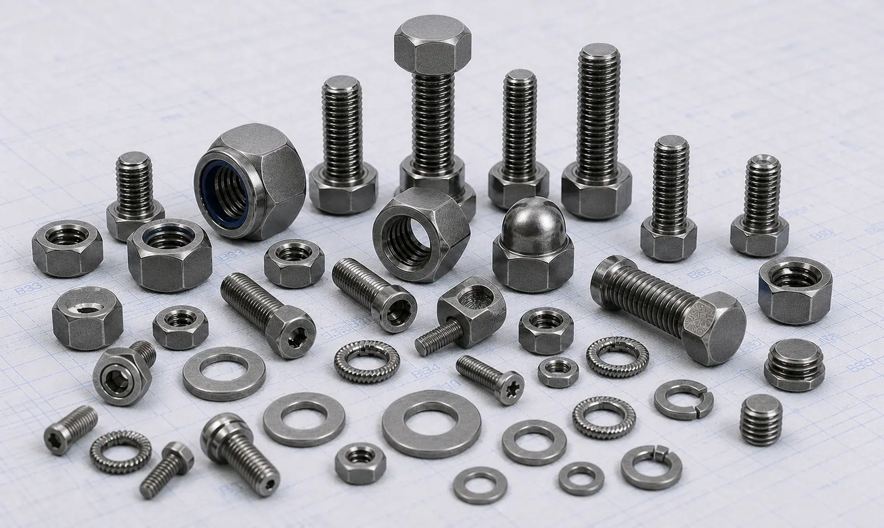

Monel K500 Fasteners including bolts, nuts, stud bolts, washers, and anchor bolts for offshore, marine, subsea, oil and gas, chemical processing, and power generation applications.
Monel K500 Fasteners are high-performance nickel-copper alloy fasteners developed for applications requiring exceptional strength, corrosion resistance, and long-term durability. Through the addition of aluminum and titanium, Monel K500 achieves significantly higher strength and hardness than Monel 400 while retaining excellent resistance to seawater, saltwater, and harsh industrial environments. Gururaj Infradesigns is a trusted Monel K500 Fasteners Manufacturer in India, supplying premium fastening solutions for marine, offshore, oil & gas, chemical processing, and power generation industries.
Our product range includes Monel K500 bolts, nuts, stud bolts, anchor bolts, washers, and other industrial fasteners manufactured in accordance with international standards and project specifications.

Monel K500 is an age-hardenable nickel-copper alloy that combines the excellent corrosion resistance of Monel 400 with significantly improved mechanical strength and hardness. The alloy performs exceptionally well in marine environments, sour gas applications, offshore platforms, and critical industrial systems exposed to aggressive operating conditions.
As a specialized grade within the broader range of Nickel Alloy Fasteners, Monel K500 Fasteners are widely selected for applications where both superior corrosion resistance and high mechanical strength are required.
| Property | Details |
|---|---|
| Product | Monel K500 Fasteners |
| Grade | Monel K500 / UNS N05500 |
| Standards | ASTM B865, ASTM F467, ASTM F468 |
| Product Types | Bolts, Nuts, Stud Bolts, Anchor Bolts, Washers |
| Sizes | M3 to M100 and Custom Sizes |
| Thread Type | Metric, UNC, UNF, BSW |
| Forms | Hex Bolts, Hex Nuts, Stud Bolts, U Bolts, Socket Head Bolts, Washers |
| Condition | Solution Annealed, Age Hardened |
| Certification | Mill Test Certificates Available |
We manufacture and supply Monel K500 bolts including hex bolts, socket head bolts, and U bolts for critical applications requiring superior strength and corrosion resistance. These bolts are commonly used in offshore structures, subsea equipment, marine systems, and oil & gas facilities.
Our Monel K500 hex nuts are engineered for demanding fastening applications where high mechanical strength and long-term durability are essential. They are widely used in marine hardware, pumps, valves, and pressure-containing equipment.
Monel K500 stud bolts are extensively used in offshore platforms, flanged piping systems, subsea installations, and process equipment where resistance to seawater corrosion and high loads is required.
We supply Monel K500 anchor bolts and washers for structural applications, industrial foundations, and critical equipment installations. These components provide dependable load distribution and reliable fastening performance in aggressive service environments.
Monel K500 Fasteners offer significantly higher tensile and yield strength than standard nickel-copper alloys. Their age-hardened structure makes them suitable for critical fastening applications subjected to heavy loads, vibration, and demanding service conditions.
The alloy retains the outstanding seawater and saltwater corrosion resistance associated with the Monel family. This makes Monel K500 bolts, nuts, and stud bolts a preferred choice for offshore platforms, marine equipment, and coastal installations exposed to harsh environments.
Monel K500 provides improved hardness and wear resistance, helping fasteners maintain their integrity in applications involving friction, repeated loading, and mechanical stress. This contributes to longer service life and reduced maintenance requirements.
Monel K500 Fasteners combine corrosion resistance, strength, and toughness, allowing them to perform reliably in offshore, oil & gas, chemical processing, and power generation industries. Their ability to withstand demanding operating conditions helps improve equipment safety and long-term reliability.
| Element | Percentage (%) |
|---|---|
| Nickel | 63.0 Min |
| Copper | 27.0 – 33.0 |
| Aluminum | 2.30 – 3.15 |
| Titanium | 0.35 – 0.85 |
| Iron | Max 2.0 |
| Manganese | Max 1.5 |
| Carbon | Max 0.25 |
| Silicon | Max 0.5 |
| Property | Typical Value |
|---|---|
| Tensile Strength | 965 MPa Min |
| Yield Strength | 690 MPa Min |
| Elongation | 20% Min |
| Hardness | 27-35 HRC |
| Density | 8.44 g/cm³ |
Monel K500 Fasteners are extensively used in offshore platforms, subsea systems, drilling equipment, and underwater assemblies where both corrosion resistance and high strength are essential.
The alloy is widely specified for propeller shafts, marine hardware, seawater pumps, valves, and structural components exposed to continuous seawater contact.
Monel K500 bolts, nuts, and stud bolts are commonly used in sour gas environments, offshore facilities, and critical processing systems requiring reliable performance.
The material is suitable for pumps, valves, pressure vessels, and chemical handling equipment operating in corrosive environments.
Power plants utilize Monel K500 Fasteners in equipment requiring excellent corrosion resistance, mechanical strength, and long service life.
| Property | Monel K500 | Monel 400 |
|---|---|---|
| Alloy Type | Age-Hardenable Nickel-Copper Alloy | Nickel-Copper Alloy |
| Strength | Higher | Good |
| Hardness | Higher | Moderate |
| Wear Resistance | Better | Good |
| Corrosion Resistance | Excellent | Excellent |
| Marine Performance | Excellent | Excellent |
Both Monel K500 and Monel 400 Fasteners provide exceptional resistance to seawater, saltwater, and corrosive industrial environments. While Monel 400 is widely used for general marine and chemical processing applications, Monel K500 offers significantly higher strength, hardness, and wear resistance through age-hardening. This makes Monel K500 a preferred choice for offshore platforms, subsea systems, marine shafts, and critical high-load fastening applications.
As a trusted Monel K500 Fasteners Supplier in India, we supply Monel K500 bolts, nuts, stud bolts, anchor bolts, and washers in a wide range of sizes and specifications. Our products support EPC contractors, OEM manufacturers, marine engineering companies, offshore contractors, and industrial buyers requiring dependable fastening solutions.
With a focus on quality, timely delivery, and technical support, we help customers meet the demands of critical industrial and infrastructure projects.
Quality remains a core part of our manufacturing and supply process. All Monel K500 Fasteners undergo inspection for dimensional accuracy, material integrity, thread quality, and compliance with applicable international standards before dispatch.
As an ISO Certified Company, we are committed to delivering fastening solutions that meet the performance expectations of marine, offshore, oil & gas, and industrial applications while maintaining consistency and reliability.
Selecting the correct fastener material requires consideration of corrosion exposure, operating temperature, mechanical loading, and service conditions. Choosing the right alloy can significantly improve equipment reliability, safety, and maintenance performance. Our team can assist in selecting suitable Monel K500 bolts, nuts, stud bolts, anchor bolts, and washers based on your project specifications and application requirements. We support OEM manufacturers, EPC contractors, engineering firms, and industrial buyers with dependable fastening solutions for critical industrial applications.